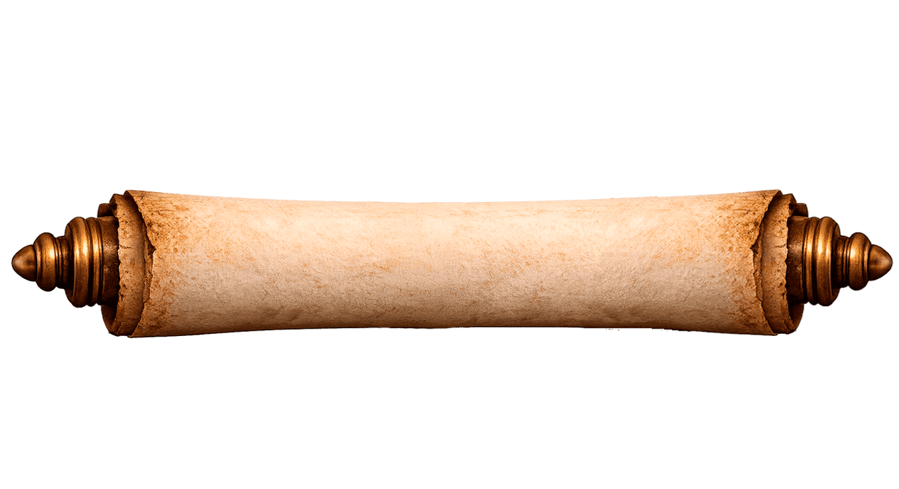

Haz clic en el pergamino para desplegar la convocatoria

El Colegio Mexicano de Profesionales de la Cultura y
la empresa Museos de Occidente
CONVOCA
A las instituciones públicas y privadas y la ciudadania en general a
proponer candidatos para recibir el
Galardón Nacional al Mérito Museístico
"Fernando Gamboa"

B A S E S
Primera. Podrán postularse como candidatos al Galardón los profesionales con destacada trayectoria que hayan prestado sus servicios a museos públicos o privados en el País durante un mínimo de 20 años, desempeñando alguna de las siguientes funciones:
- Director de Museo
- Museólogo o museógrafo
- Investigadores y Curadores(arqueólogos, paleontólogos, historiadores, antropólogos y demás especialidades)
- Creadores de Material Didáctico especializado en museos.
- Promotores de Museo(guías, encargados de servicios educativos, etc.)
Segunda. Los interesados en postular candidatos deberán entregar los siguientes documentos en archivo digital o impreso en las oficinas del Colegio Mexicano de Profesionales de la Cultura, ubicadas en calle López Santos #128, Col. Las pintas, Municipio de Guadalajara, Jalisco. de El Salto, Jalisco, C:P 45690
- Escrito dirigido al comité de selección para el Galardón Museístico “Fernando Gamboa”, en el que se expongan los motivos de la postulación del candidato, con nombre y firma de quienes realizan la postulación (podrán suscribir la propuesta una o varias personas).
- Curriculum Vitae del candidato, con soporte (fotografías, constancias, nombramientos, certificados y demás documentos que avalen su trayectoria).
- Material extra probatorio de su trayectoria (publicaciones, notas de prensa, videos, folletos, etc.).
Tercera. Las propuestas serán evaluadas por un comité conformado por tres especialistas en museología con reconocida trayectoria y por el titular de la Presidencia del Colegio Mexicano de Profesionales de la Cultura, así como dos miembros colegiados del Consejo Permanente y un representante de la empresa Museos de Occidente.
Cuarta. El Galardón podrá ser declarado desierto si el comité así lo considera. En todo caso, su decisión será inapelable.
Quinta. El Galardón consiste en un impreso alusivo, suscrito por los titulares del Colegio Mexicano de Profesionales de la Cultura y la empresa Museos de Occidente que reconoce el mérito a la trayectoria y esfuerzo realizado por quienes sean merecedores del tal premio.
Sexta. La presente convocatoria estará vigente a partir de su publicación y hasta el 01 (primero) de mayo de 2026.
Septima. La entrega del Galardón se realizará el sábado 9 de mayo de 2026, en el marco de la conmemoración del aniversario luctuoso del Mtro. Fernando Gamboa primer museógrafo y curador mexicano, y previo al festejo del Día Internacional de los Museos.
Octava. La participación en este certamen implica la aceptación de todas y cada una de las bases de la presente Convocatoria. Cualquier caso no previsto en esta Convocatoria será resuelto únicamente por el Colegio Mexicano de Profesionales de la Cultura y la empresa Museos de Occidente.